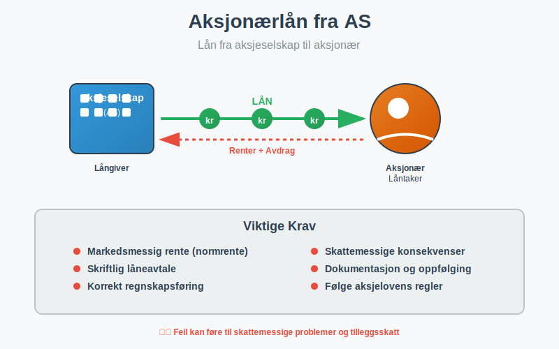
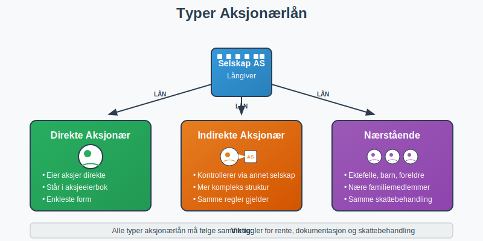
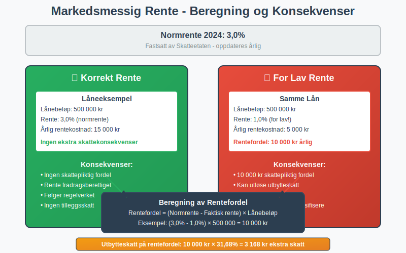
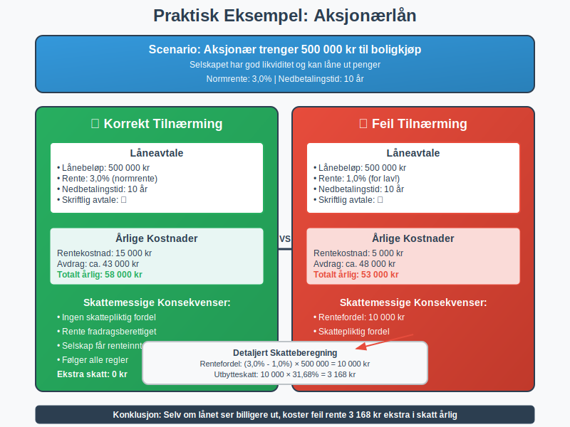

Et aksjonærlån fra AS er et lån som et aksjeselskap gir til en av sine aksjonærer. Dette er en vanlig finansieringsform i mindre selskaper, men det følger strenge regler og skattemessige konsekvenser som må følges nøye.

Hva er et Aksjonærlån?
Et aksjonærlån oppstår når et aksjeselskap låner ut penger til en person eller et selskap som eier aksjer i selskapet. Dette kan være:
- Direkte aksjonærer: Personer eller selskaper som eier aksjer direkte
- Indirekte aksjonærer: Personer som kontrollerer selskapet gjennom andre selskaper
- Nærstående til aksjonærer: Ektefeller, barn, foreldre og andre nære familiemedlemmer
Lånet må dokumenteres skriftlig og følge markedsmessige vilkår for å unngå skattemessige problemer.

Skattemessige Konsekvenser
Aksjonærlån har betydelige skattemessige implikasjoner både for selskapet og låntakeren:
For Selskapet (Långiveren)
- Renteberegning: Selskapet må kreve markedsmessig rente på lånet
- Renteinntekt: Mottatt rente regnes som skattepliktig inntekt for selskapet
- Dokumentasjon: Alle lån må være skriftlig dokumentert med klare vilkår
For Aksjonæren (Låntakeren)
- Fordel: Hvis lånet gis til under markedsrente, regnes forskjellen som skattepliktig fordel
- Renteutgift: Betalt rente kan være fradragsberettiget avhengig av hva lånet brukes til
- Tilbakebetaling: Lånet må betales tilbake i henhold til avtalen
Markedsmessig Rente
Et av de viktigste kravene er at lånet må ha markedsmessig rente. Dette betyr:
Normrente
Skatteetaten fastsetter en normrente som oppdateres årlig. For 2024 er normrenten:
- 3,0% for lån til aksjonærer
- Renten justeres basert på utviklingen i markedsrentene
Konsekvenser av for lav rente
Hvis lånet gis til under normrenten, regnes forskjellen som:
- Skattepliktig fordel for aksjonæren
- Utbytte som kan utløse utbytteskatt

Dokumentasjonskrav
Alle aksjonærlån må være skriftlig dokumentert med følgende informasjon:
Låneavtale
- Lånebeløp: Hvor mye som lånes
- Rentesats: Markedsmessig rente som skal betales
- Nedbetalingsplan: Hvordan og når lånet skal tilbakebetales
- Sikkerhet: Eventuelle sikkerheter for lånet
- Misligholdsbestemmelser: Hva som skjer ved manglende betaling
Regnskapsføring
Lånet må føres korrekt i selskapets regnskap:
- Balansen: Lånet føres som fordring på aksjonær
- Resultatregnskapet: Renteinntekter føres som finansinntekt
- Noter: Aksjonærlån må spesifiseres i notene til regnskapet
Praktiske Eksempler
Eksempel 1: Boligkjøp
En aksjonær trenger 500 000 kr til boligkjøp:
- Lånebeløp: 500 000 kr
- Rente: 3,0% (normrente)
- Nedbetalingstid: 10 år
- Årlig rentekostnad: 15 000 kr
- Skattemessig behandling: Renten er fradragsberettiget for aksjonæren
Eksempel 2: For lav rente
Samme lån, men med 1,0% rente:
- Rentefordel: (3,0% - 1,0%) × 500 000 = 10 000 kr årlig
- Skattekonsekvens: 10 000 kr regnes som skattepliktig fordel for aksjonæren
- Utbytteskatt: Kan utløse 31,68% utbytteskatt = 3 168 kr

Risiko og Fallgruver
Vanlige Feil
- Manglende dokumentasjon: Lån uten skriftlig avtale
- For lav rente: Bruk av rente under normrenten
- Manglende oppfølging: Ikke kreve inn renter eller avdrag
- Feil regnskapsføring: Ikke føre lånet korrekt i regnskapet
Konsekvenser ved Feil
- Skatteetaten kan omklassifisere lånet som utbytte
- Tilleggsskatt og renter kan påløpe
- Aksjonæren kan få uventet skatteregning
- Selskapet kan miste rentefradrag
Alternativer til Aksjonærlån
I stedet for aksjonærlån kan man vurdere:
Utbytte
- Direkte utbetaling av overskudd til aksjonærer
- Utbytteskatt: 31,68% for personlige aksjonærer (se fritaksmetoden for skattefritak mellom selskaper)
- Enklere administrasjon enn lån
Lønn eller Bonus
- Arbeidsgiverytelse hvis aksjonæren jobber i selskapet
- Arbeidsgiveravgift og skatt på lønn
- Pensjonsgivende inntekt
Sikkerhetsstillelse
- Selskapet stiller sikkerhet for aksjonærens lån i bank
- Mindre komplekst enn direkte utlån
- Fortsatt skattemessige konsekvenser ved for gunstige vilkår
Regnskapsføring av Aksjonærlån
Korrekt regnskapsføring er avgjørende:
I Selskapets Regnskap
Balanse:
- Fordringer på aksjonærer (omløpsmidler)
- Påløpte renteinntekter
Resultatregnskap:
- Renteinntekter (finansinntekter)
Noteopplysninger
Aksjonærlån må spesifiseres i notene med:
- Lånebeløp per aksjonær
- Rentesats og vilkår
- Forfallstidspunkt
- Eventuelle sikkerheter
Kontroll og Oppfølging
Løpende Oppfølging
- Månedlig renteberegning og fakturering
- Oppfølging av betalinger og eventuelle mislighold
- Oppdatering av låneavtaler ved endringer
Årlig Gjennomgang
- Kontroll av normrente og justering ved behov
- Vurdering av nedskrivningsbehov ved mislighold
- Oppdatering av noteopplysninger i årsregnskapet
Juridiske Aspekter
Aksjelovens Bestemmelser
Aksjeloven har spesielle regler for aksjonærlån:
- Styrets godkjenning kan være nødvendig for større lån
- Generalforsamlingens samtykke ved betydelige beløp
- Inhabilitet ved behandling av egne lån
Kreditorvern
- Selskapets kreditorer må beskyttes mot uthuling
- Soliditetssvekking kan være problematisk
- Tilbakebetalingsevne må vurderes
Praktiske Råd
For Selskapet
- Etabler klare retningslinjer for aksjonærlån
- Bruk standardiserte låneavtaler utarbeidet av advokat
- Implementer rutiner for oppfølging og renteberegning
- Sørg for korrekt regnskapsføring fra dag én
- Hold deg oppdatert på normrenten
For Aksjonæren
- Forstå skattekonsekvensene før du tar opp lån
- Vurder alternativer som utbytte eller lønn
- Sørg for skriftlig avtale med klare vilkår
- Betal renter og avdrag i henhold til avtalen
- Konsulter regnskapsfører ved usikkerhet
Relaterte Begreper
For å forstå aksjonærlån fullt ut, bør du også sette deg inn i:
- Aksjeselskap (AS) - Selskapsformen som kan gi lån
- Aksjer - Eierandelene som gir rett til lån
- Aksjekapital - Selskapets grunnleggende kapital
- Aksjonærlån til AS - Det motsatte: lån fra aksjonær til selskap
- Aksjeloven - Loven som regulerer aksjonærlån
- Regnskap - Regnskapsføring av lån og renter
Aksjonærlån kan være et nyttig finansieringsverktøy, men krever nøye planlegging og oppfølging for å unngå skattemessige problemer og sikre korrekt behandling i henhold til norsk lov.